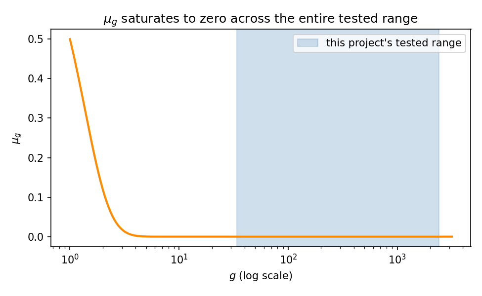
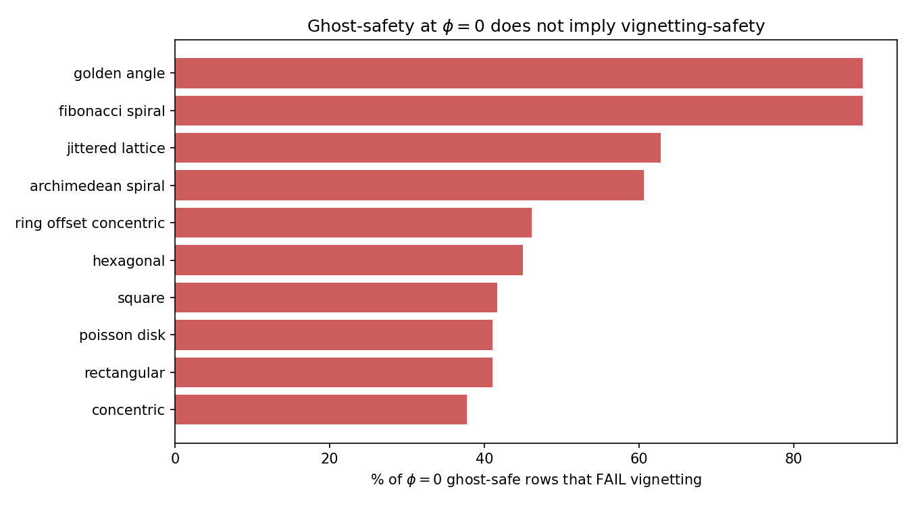
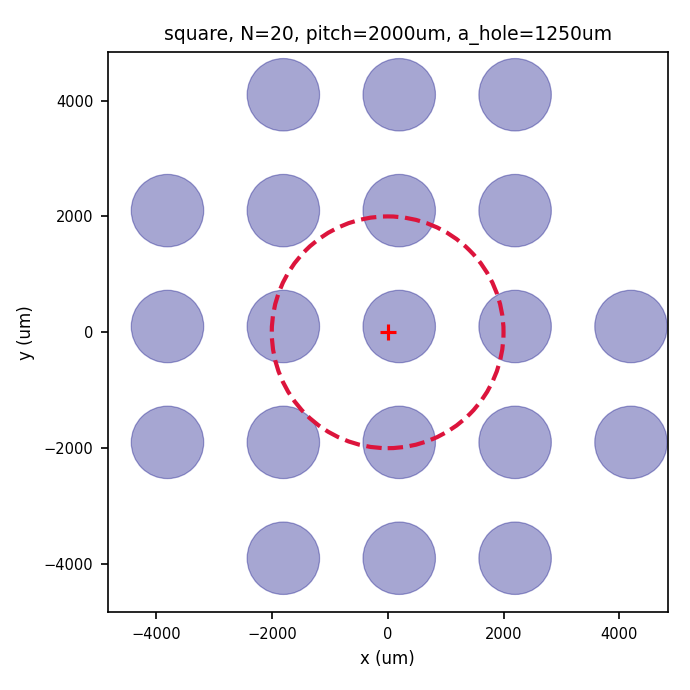
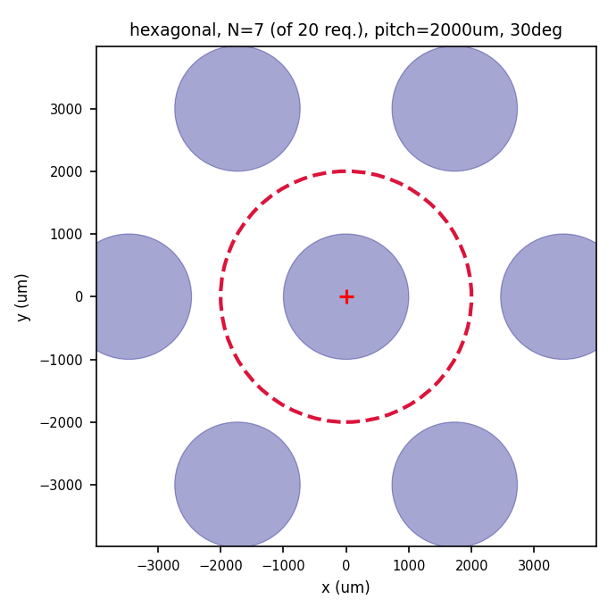
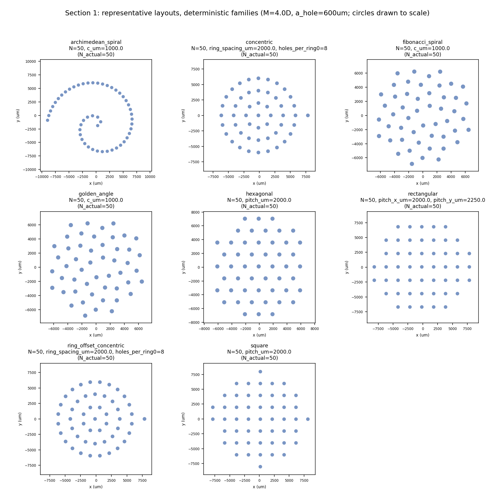
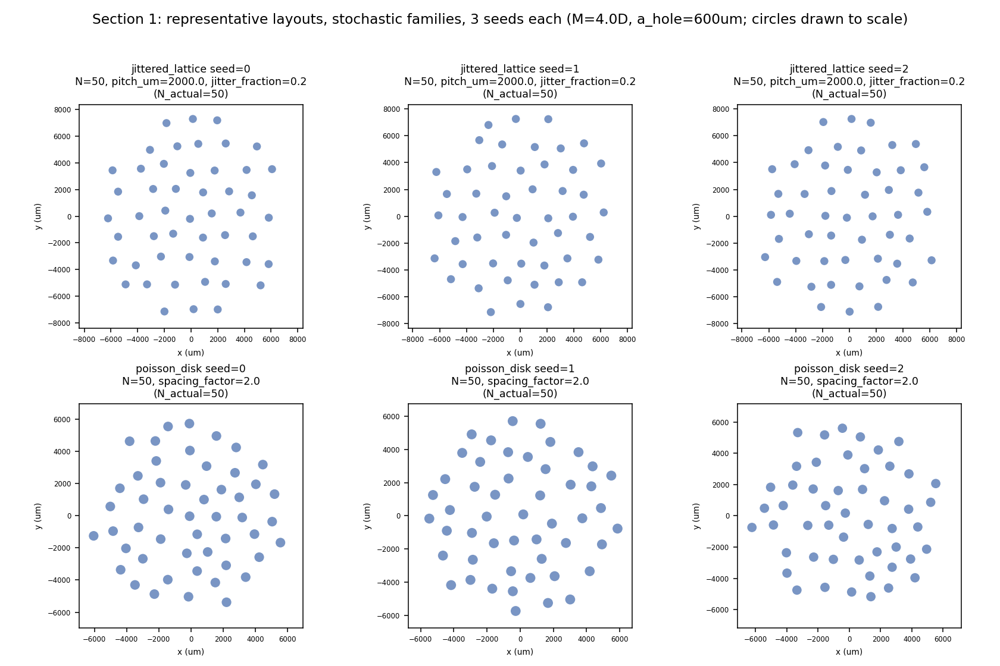
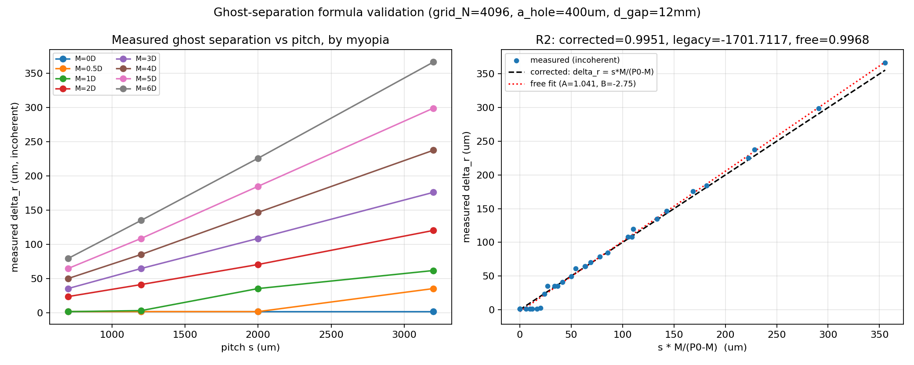
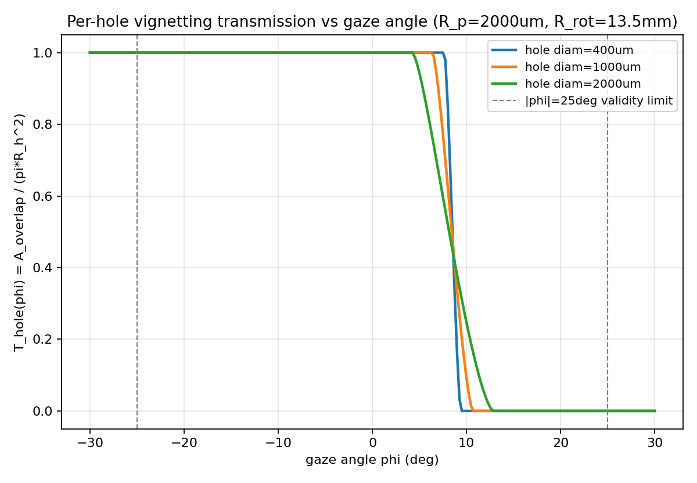

A full wave-optics simulation pipeline that designs pinhole eyewear tailored to a wearer's exact myopia level — sharper focus, controlled glare, no corrective lens, no compromise on the physics.
Prescription glasses correct focus. Sunglasses cut light. A short-sighted person outdoors in bright sun is stuck choosing between the two, or wearing both at once.
The stenopeic (pinhole) effect has been used clinically for over a century: a small enough aperture sharpens a defocused image by pure geometry — restricting which rays reach the retina — with no lens required. Ophthalmologists still use pinhole occluders today as a standard diagnostic test for exactly this reason.
So why isn't this already a product? A single pinhole small enough to sharpen an image lets through almost no light — useless outdoors. Arrays of many small holes solve the brightness problem, but introduce a subtler one: multiple holes can each project their own copy of the image onto the retina.
Get the spacing wrong, and the wearer sees double. Every prior attempt at pinhole eyewear has either accepted this risk quietly, or used blur models too simplified to catch it in the first place.
When light passes through a small aperture, two separate effects blur the image: ordinary defocus (the geometry of a short-sighted eye), and diffraction — the wave nature of light bending around the edge of the hole itself. How you combine these two effects determines whether your design actually works.
Most models — including the most recent published academic approach to this exact problem — combine defocus and diffraction blur by simple addition-in-quadrature (root-sum-square). It's fast, and it's what optics textbooks teach as a first approximation. It also silently assumes the two effects don't interact — which, at the hole sizes and distances real eyewear uses, isn't quite true.
The Angular Spectrum Method propagates the actual light field — as a wave, not a ray — from the pinhole, through the eye's optics, to the retina. Every diffraction ripple and every interaction with defocus falls directly out of one continuous calculation. Nothing is approximated or bolted on afterward.
A conventional pinhole novelty product uses the same hole pattern for everyone. Our pipeline computes hole diameter, spacing, and arrangement independently for each myopia strength — the same way an actual prescription lens is ground to one person's exact correction, not sold off a shelf.
As myopia increases, the optimal hole size shrinks — smaller apertures resolve stronger defocus more precisely, at the cost of needing a different spacing pattern to stay ghost-free. The array below shows real, simulated aperture diameters our pipeline computed across the myopia range we tested:
Build eyewear that treats vision correction and light management as one optical problem, not two — validated with the rigor of a physics study, not the confidence of a marketing claim.
Every formula in this pipeline was checked against an independent method before being trusted — closed-form results verified against direct wave simulation, simulation results verified against hand calculation, and the whole safety framework benchmarked against the most rigorous published academic model available for this exact problem.
The most recent academic approach to this problem scores ghost-safety as one soft, weighted term among several — a risky design can be outweighed by a good score elsewhere, never fully rejected. We reimplemented their formula from scratch and found it goes numerically inert across our entire tested design space at real device scale — it stops distinguishing safe designs from unsafe ones entirely.


Every pattern below is the direct output of the simulation pipeline, checked against real, measured safety margins — not just a pass/fail threshold, but actual headroom above it.


Regular lattices, radial rings, spirals, and disordered patterns were each generated, propagated through the full wave-optics pipeline, and checked against real safety margins — not assumed to work from theory alone.


Both the ghost-separation formula and the gaze-angle overlap geometry were validated against methods that share no code with each other — if a formula were wrong, an independent check built a different way would be the thing to catch it.


Two safety standards were applied and cross-checked: a conservative worst-case margin, and a realistic standard weighted by measured human gaze behavior. Every design below satisfies both — real, finite safety margin under the strict standard, and genuine 0% ghosting under the realistic one.
| Myopia | Family | Pattern | Aperture | Ghost (weighted) | Blind (weighted) |
|---|---|---|---|---|---|
| 0 D | Square | N=20, pitch=4000µm | 2000µm | 0.00% | 0.00% |
| 1 D | Hexagonal | N=20, pitch=4000µm | 1250µm | 0.00% | 0.00% |
| 2–3 D | Hexagonal | N=20, pitch=4000µm | 750µm | 0.00% | 0.00% |
| 4–5 D | Hexagonal | N=20, pitch=4000µm | 600µm | 0.00% | 0.00% |
| 6 D | Hexagonal | N=100, pitch=4000µm | 500µm | 0.00% | 0.12% |
| 8 D | Hexagonal | N=50, pitch=4000µm | 400µm | 0.00% | 0.33% |
| Global | Square | N=20, pitch=4000µm | 2000µm | 0.00% | 0.00% |